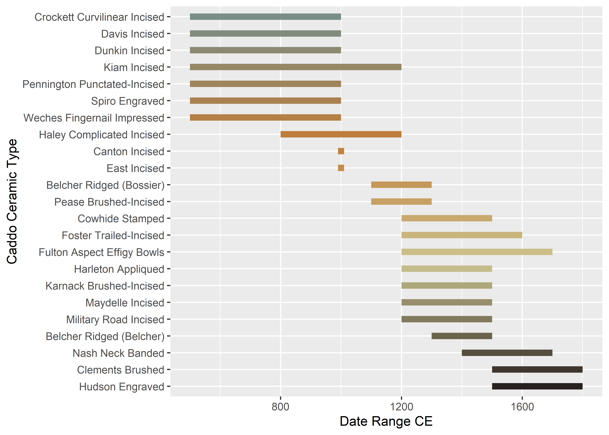

Chapter 1 Introduction
This document contains supplementary materials associated with the article, “Do apparent differences in ceramic incision morphology provide inference to a common toolkit?” The volume is organised by chapter, and details the samples and geometric morphometric analyses associated with the experimental and archaeological materials. Images of each sample are included; however, the processed and unprocessed 3D scan data are embargoed for a period of five years from the most recent submission that leverages them.
The incision project is part of a long-term research programme, representing an expansion of previous efforts to better comprehend the vagaries associated with ceramic (Selden Jr. 2017, 2018b, 2018a, 2019; Selden Jr., Perttula, and O’Brien 2014) and lithic morphology (Selden Jr., Dockall, and Shafer 2018; Selden Jr., Dockall, and Dubied 2020), which provided insights into inter- and intraspecific shape differences and shape changes that articulate in and among various categories of Caddo material culture (Selden Jr. 2020).
The genesis of this project occurred during a slip, glazing, and atmospheric firing workshop at the Arrowmont School of Arts and Crafts in Gatlinburg, Tennessee, where access to the materials, dry box, and electric kilns provided a means to produce the experimental sample. The archaeological sample was provided with permission and support from the Caddo Tribe of Oklahoma, and comes from sites on the Angelina, Davy Crockett, and Sabine National Forests, which are units of the National Forests and Grasslands in Texas (NFGT). Partial funding for this project came from a Media Grant to the Caddo Tribe of Oklahoma through the National Center for Preservation Technology and Training (NCPTT), and additional funding was provided by grants from the NFGT (15-PA-11081300-033 and 20-PA-11081300-074). NCPTT provided access and training for the optical profilometer used to generate 3D meshes for the experimental and archaeological samples at their laboratory in Natchitoches, Louisiana, as well as a copy of the Keyence VR Series Analyzer Software that was used to render and export the meshes.
The landmarking protocol (see Section 3.1) is identical on both the experimental and archaeological samples, and was designed to capture the profile of the business end of the instrument used to apply each incision. One insight made clear by the experimental analysis is that a single tool could have been used to apply incisions that render differing marks in profile. Since incisions are made while the clay body is not yet dry, the range of variation is potentially greater than that of engraved, trailed, or etched designs, and the deepest cross-section of each incision should provide the most complete profile of the tool employed by Caddo potters to apply these marks.
1.1 Incised Caddo types
Temporal attributes of incised Caddo types were aggregated from published type books (Suhm, Krieger, and Jelks 1954; Suhm and Jelks 1962), and arranged chronologically. The list of incised Caddo types includes those types where the decorative treatments listed in the type book made note of incised elements. This provides a basic temporal framework from which chronological components can begin to be isolated. None of the incised sherds used in this study include enough of a decorative pattern to be assigned to a type, meaning that this sample could span the full temporal range of incised Caddo types. As this study is expanded, incisions from specific types will be included to explore whether Caddo potters may have used different tools to apply the various decorative motifs that include incised elements.
1.1.1 Chronology for incised Caddo types
# load ggplot2
library(ggplot2)
# gantt chart of (possible) relative dates for ceramic components
temp<-data.frame(Type = c('Belcher Ridged (Bossier)', 'Belcher Ridged (Belcher)', 'Canton Incised', 'Clements Brushed', 'Cowhide Stamped', 'Crockett Curvilinear Incised', 'Davis Incised', 'Dunkin Incised', 'East Incised', 'Foster Trailed-Incised', 'Fulton Aspect Effigy Bowls', 'Haley Complicated Incised', 'Harleton Appliqued', 'Hudson Engraved', 'Karnack Brushed-Incised', 'Kiam Incised', 'Maydelle Incised', 'Military Road Incised', 'Nash Neck Banded', 'Pease Brushed-Incised', 'Pennington Punctated-Incised', 'Spiro Engraved', 'Weches Fingernail Impressed'), # canton/east incised types date to AD 1000, but were modified to 990-1010 so that it would show on the gantt chart
Date_Range_CE = c(1100, 1300, 990, 1500, 1200, 500, 500, 500, 990, 1200, 1200, 800, 1200, 1500, 1200, 500, 1200, 1200, 1400, 1100, 500, 500, 500), # in years CE
end = c(1300, 1500, 1010, 1800, 1500, 1000, 1000, 1000, 1010, 1600, 1700, 1200, 1500, 1800, 1500, 1200, 1500, 1500, 1700, 1300, 1000, 1000, 1000) # in years CE
)
# reorder types by date range
temp$Type <- factor(temp$Type, levels = temp$Type[order(temp$Date_Range_CE)])
type.time <- ggplot(temp, aes(x = Date_Range_CE, xend = end, y = factor(Type,
levels = rev(levels(factor(Type)))), yend = Type, color = Type)) +
geom_segment(size = 2) +
scale_colour_discrete() +
theme(legend.position = "none") +
labs(y = "Incised Caddo Types", x = "Date Range CE")
# render figure
type.time
References
Selden Jr., Robert Z. 2017. “Asymmetry of Caddo Ceramics from the Washington Square Mound Site: An Exploratory Analysis.” Digital Applications in Archaeology and Cultural Heritage 5: 21–28. https://doi.org/10.1016/j.daach.2017.04.003.
Selden Jr., Robert Z. 2017. “Asymmetry of Caddo Ceramics from the Washington Square Mound Site: An Exploratory Analysis.” Digital Applications in Archaeology and Cultural Heritage 5: 21–28. https://doi.org/10.1016/j.daach.2017.04.003.
2018a. “A Preliminary Study of Smithport Plain Bottle Morphology in the Southern Caddo Area.” Bulletin of the Texas Archeological Society 89: 63–89.Selden Jr., Robert Z. 2017. “Asymmetry of Caddo Ceramics from the Washington Square Mound Site: An Exploratory Analysis.” Digital Applications in Archaeology and Cultural Heritage 5: 21–28. https://doi.org/10.1016/j.daach.2017.04.003.
2018a. “A Preliminary Study of Smithport Plain Bottle Morphology in the Southern Caddo Area.” Bulletin of the Texas Archeological Society 89: 63–89. 2018b. “Ceramic Morphological Organisation in the Southern Caddo Area: Quiddity of Shape for Hickory Engraved Bottles.” Journal of Archaeological Science: Reports 21: 884–96. https://doi.org/10.1016/j.jasrep.2018.08.045.Selden Jr., Robert Z. 2017. “Asymmetry of Caddo Ceramics from the Washington Square Mound Site: An Exploratory Analysis.” Digital Applications in Archaeology and Cultural Heritage 5: 21–28. https://doi.org/10.1016/j.daach.2017.04.003.
2018a. “A Preliminary Study of Smithport Plain Bottle Morphology in the Southern Caddo Area.” Bulletin of the Texas Archeological Society 89: 63–89. 2018b. “Ceramic Morphological Organisation in the Southern Caddo Area: Quiddity of Shape for Hickory Engraved Bottles.” Journal of Archaeological Science: Reports 21: 884–96. https://doi.org/10.1016/j.jasrep.2018.08.045. 2019. “Ceramic Morphological Organisation in the Southern Caddo Area: The Clarence H. Webb Collections.” Journal of Cultural Heritage 35: 41–55. https://doi.org/https://doi.org/10.1016/j.culher.2018.07.002.Selden Jr., Robert Z. 2017. “Asymmetry of Caddo Ceramics from the Washington Square Mound Site: An Exploratory Analysis.” Digital Applications in Archaeology and Cultural Heritage 5: 21–28. https://doi.org/10.1016/j.daach.2017.04.003.
2018a. “A Preliminary Study of Smithport Plain Bottle Morphology in the Southern Caddo Area.” Bulletin of the Texas Archeological Society 89: 63–89. 2018b. “Ceramic Morphological Organisation in the Southern Caddo Area: Quiddity of Shape for Hickory Engraved Bottles.” Journal of Archaeological Science: Reports 21: 884–96. https://doi.org/10.1016/j.jasrep.2018.08.045. 2019. “Ceramic Morphological Organisation in the Southern Caddo Area: The Clarence H. Webb Collections.” Journal of Cultural Heritage 35: 41–55. https://doi.org/https://doi.org/10.1016/j.culher.2018.07.002. 2020. “Louisiana Limitrophe: An Iterative Morphological Exegesis of Caddo Bottle and Biface Production.” In Ancestral Caddo Ceramic Traditions, edited by Duncan P. McKinnon, Jeffrey S. Girard, and Timothy K. Perttula, (in press). Baton Rouge: LSU Press.Selden Jr., Robert Z., John E. Dockall, and Morgane Dubied. 2020. “A Quantitative Assessment of Intraspecific Morphological Variation in Gahagan Bifaces from the Southern Caddo Area and Central Texas.” Southeastern Archaeology 39 (2): 125–45. https://doi.org/10.1080/0734578x.2020.1744416.
Selden Jr., Robert Z., John E. Dockall, and Harry J. Shafer. 2018. “Lithic Morphological Organisation: Gahagan Bifaces from the Southern Caddo Area.” Digital Applications in Archaeology and Cultural Heritage 10: e00080. https://doi.org/10.1016/j.daach.2018.e00080.
Selden Jr., Robert Z., Timothy K. Perttula, and Michael J. O’Brien. 2014. “Advances in Documentation, Digital Curation, Virtual Exhibition, and a Test of 3D Geometric Morphometrics: A Case Study of the Vanderpool Vessels from the Ancestral Caddo Territory.” Advances in Archaeological Practice 2 (2): 1–15. https://doi.org/10.7183/2326-3768.2.2.64.
Suhm, Dee Ann, and Edward B. Jelks. 1962. “Handbook of Texas Archeology: Type Descriptions. A Cumulative Compendium of Type Descriptions.” The Texas Memorial Museum Bulletin 4: 1–297.
Suhm, Dee Ann, Alex D. Krieger, and Edward B. Jelks. 1954. “An Introductory Handbook of Texas Archeology.” Bulletin of the Texas Archeological Society 25: 1–562.